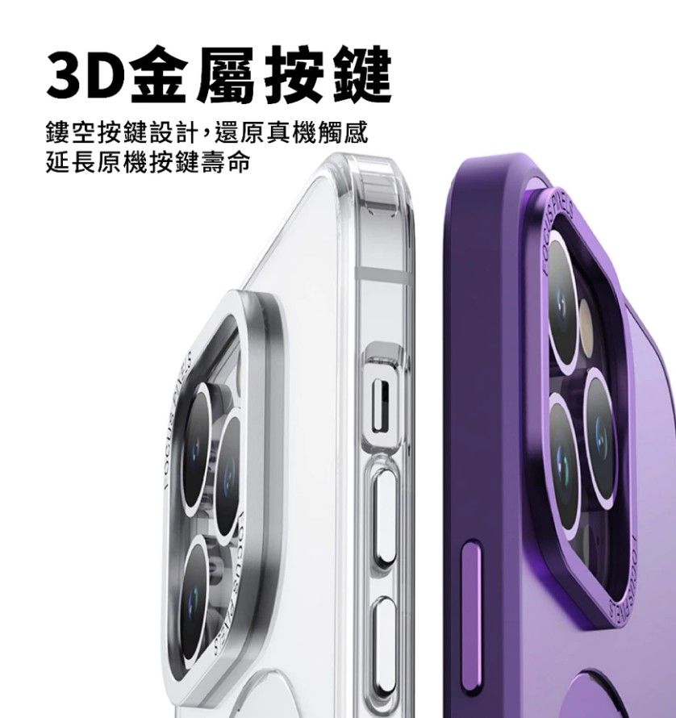
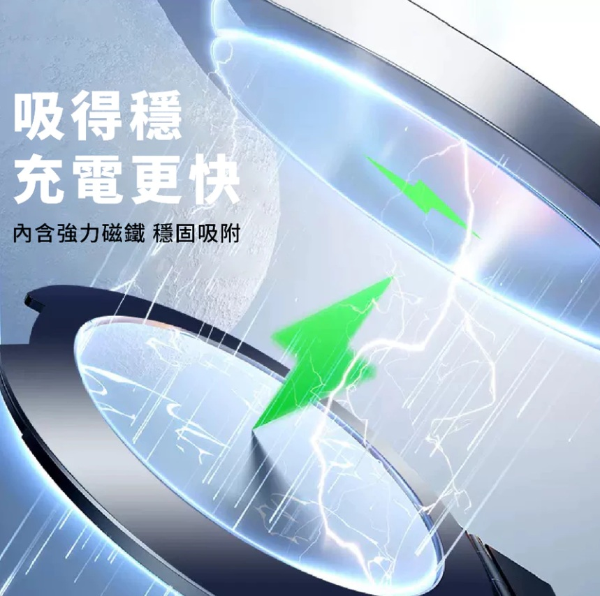

你有沒有這種時刻：在廚房照著手機食譜煮菜，手一濕又要去滑螢幕；躺在床上追劇，手舉到痠還是得撐著；開視訊會議，一手扶手機一手比劃，畫面還一直晃。手機早就是生活的一部分，但「要用手一直拿著」這件事，其實很多情況下根本沒必要。
這篇就來聊聊 MagSafe 磁吸配件這個小宇宙，順便分享我最近用得很順手的一個東西——一款帶 360 度旋轉支架的磁吸防摔殼。它把「支架」和「保護殼」合而為一，解決的正是上面那些日常小麻煩。
先搞懂：MagSafe 磁吸到底是什麼
從 iPhone 12 開始，Apple 在手機背面內建了一圈磁鐵，這套系統叫 MagSafe。簡單說，就是讓配件可以「啪」一聲吸附在手機背後，對準、牢固、好拆。
磁吸生態現在很完整，常見的有：
- 磁吸充電盤：對準就能無線充電，不用插線
- 磁吸車架：吸上去就導航，不用夾來夾去
- 磁吸卡包／皮夾：把悠遊卡、信用卡吸在背後
- 磁吸支架：讓手機免手扶立起來，這篇的主角
比起傳統「用夾的、用黏的」配件，磁吸的好處是對位快、不留殘膠、換上換下很乾脆。而這款支架殼聰明的地方，是直接把磁吸環和支架做進殼子裡，連額外吸一個配件都省了。
為什麼是「360 度旋轉支架」而不是普通支架
市面上的支架殼很多，但多數只能「直立」或「橫放」固定一兩個角度。這款的差別在支架可以 360 度旋轉，實際用起來的感受差很多：
- 追劇：橫放調到最舒服的仰角，躺著看不會脖子痠
- 看食譜 / 教學影片：直立放在流理台或桌上，雙手空出來做事
- 視訊會議：喬一個不會仰拍下巴的角度，畫面穩穩的
- 拍商品 / 錄影：固定角度拍俯視畫面，不用找東西墊
而且支架收起來是平貼在背面的金屬圓環，不用時幾乎不占厚度，放口袋也不卡。
另一個我覺得加分的小細節是按鍵設計。很多殼子為了防摔把按鍵包得很緊，按起來又硬又糊。這款用的是 3D 金屬鏤空按鍵，保留了接近裸機的觸感，音量鍵和電源鍵按下去回饋很明確，不會覺得「隔了一層」。

支架之外，「防摔」也沒馬虎
支架再方便，殼子本身保護力不夠也是白搭。挑防摔殼可以看這幾個重點：
- 四角氣囊：手機最怕角落著地，加厚的氣囊角能吸收大半衝擊
- 邊框高於螢幕與鏡頭：正面朝下放桌上時，螢幕和鏡頭不會直接磨到
- 材質：軟硬適中的 TPU 兼顧抓握與緩衝
這款在這幾點都有做到，等於一個殼同時給你「支架」和「防摔」兩件事，不用為了裝支架犧牲保護力。
磁吸吸得穩，充電更順
前面提到 MagSafe，這款殼在磁吸這塊也做得紮實。殼內嵌了一圈強力磁鐵，吸附充電盤、車架、磁吸配件時對位快又牢，不會晃；放上無線充電盤也能穩穩對準線圈，充電更有效率。對已經在用 MagSafe 配件的人來說，這點很有感——配件啪一下就定位，不用再喬角度。

怎麼確認適不適合你的 iPhone
一個最常被問的問題：「我的手機能用嗎？」這款的適用範圍很廣，從 iPhone 11 一路到 18，包含各代的 Pro / Pro Max，大致都有對應型號。下單前只要記得一件事：
挑對你的機型。手機殼是依機型開模的，尺寸、鏡頭開孔都不同，選錯型號會裝不上或擋到鏡頭。下單頁面通常有型號下拉選單，對準你的 iPhone 選就好。
另外補充一點：如果你的手機是 iPhone 12 以後，背面本來就有 MagSafe 磁吸；更舊的機型（11 以前）沒有內建磁吸，但這款殼靠的是殼子本身的支架結構，不影響立架功能，一樣能用。
※ 本連結為蝦皮聯盟行銷連結，透過它購物我會獲得少許回饋，不影響你的售價。
這類配件值不值得買？
我自己的心得是：支架殼是少數「買了會一直用」的配件。它不像一些花俏小物買回來擺著生灰，而是你每天追劇、煮飯、視訊都會自然用到。價格通常也不貴，CP 值算高的。
當然，如果你平常手機幾乎不離手、也沒有免手扶的需求，那普通殼就夠了。但只要你常常「希望手能空出來」，一個帶旋轉支架的防摔殼大概會變成你離不開的東西。
有興趣的話，記得先選對自己的 iPhone 型號再下單 🐾
※ 本連結為蝦皮聯盟行銷連結，透過它購物我會獲得少許回饋，不影響你的售價。